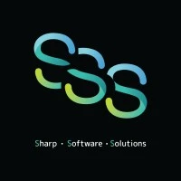

About Me
I’m a Junior Web Developer with a Bachelor of Information Technology, focused on front-end development as I work toward becoming full-stack. I love building clean, responsive, and user-friendly websites that bring ideas to life.
My goal is to build websites that look great and perform seamlessly, creating digital experiences that truly make an impact.
Work Experience

Web Developer
Sharp Software Solutions